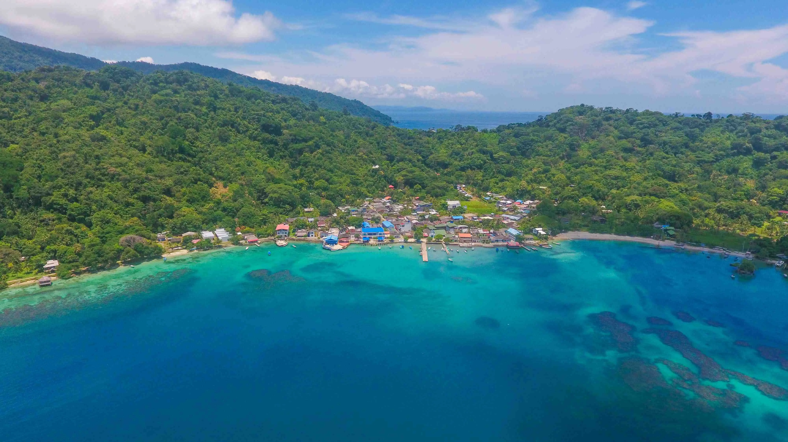
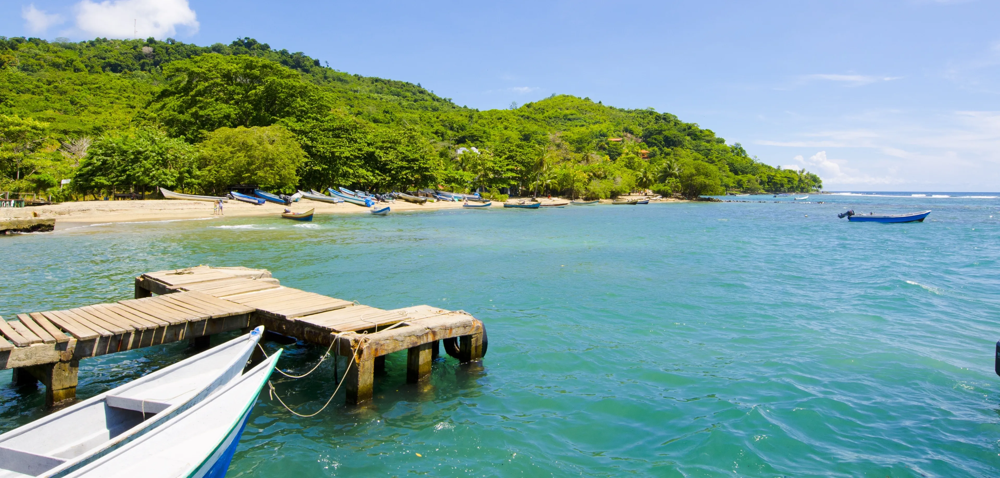

Descubre la Magia del Chocó
Sumérgete en la belleza natural y la cultura vibrante del Pacífico colombiano. Un paraíso de biodiversidad, tradición y paisajes impresionantes.

Naturaleza en Estado Puro
Explora selvas tropicales, playas vírgenes y ríos cristalinos que te dejarán sin aliento.

Cultura y Tradición
Conoce las ricas tradiciones y la calidez de su gente, guardianes de una herencia cultural invaluable.
Paraíso de Biodiversidad
Hogar de miles de especies de flora y fauna, muchas de ellas únicas en el mundo.
Aventura Sin Límites
Desde senderismo y avistamiento de ballenas hasta experiencias culturales inolvidables.